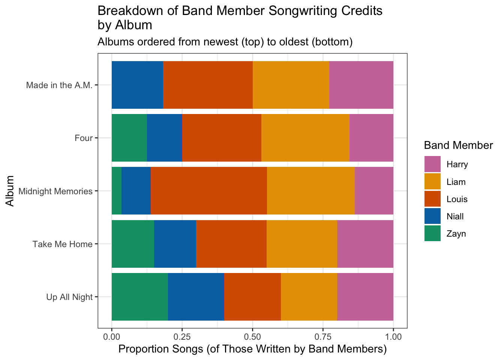
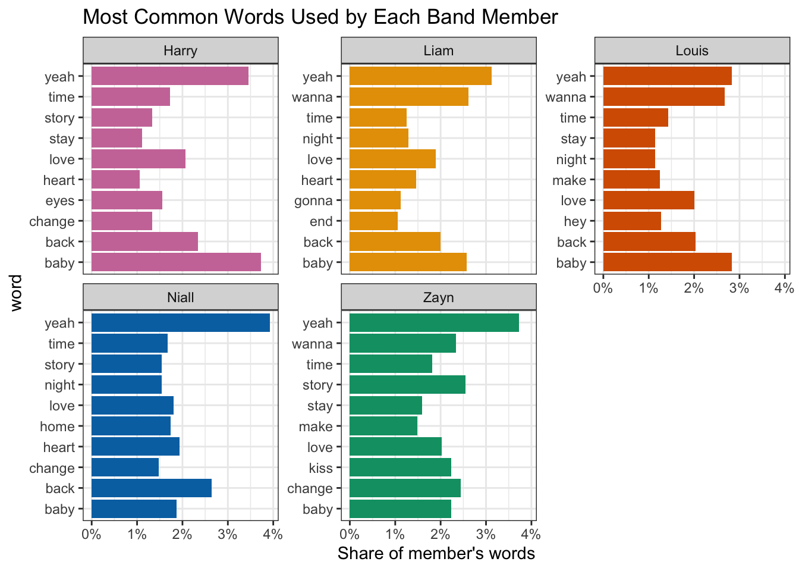
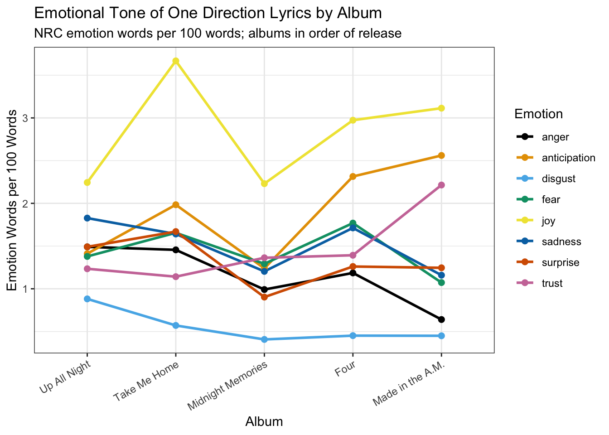

One Direction: Behind the Songs of a Boy Band
SDS 264: Mini Project 1
Introduction
One Direction released five studio albums between 2011 and 2015, going from Up All Night to Made in the A.M. Not long after, the band went on hiatus and its members went their separate ways. As a devoted fan, I wanted to know whether their music, and their songwriting in particular, changed during the years they were together. Using the One Direction All Songs dataset from Kaggle, I look at the lyrics and songwriting credits from all five albums: who wrote the songs, which words each writer used, and how the emotional tone of the lyrics shifted from one album to the next.
Analysis
Songwriting Credits
For the first plot I looked only at songs with at least one band member as a writer and asked which member it was. On Up All Night, credits are split evenly, about 20% each, which suggests those songs were credited to the whole group. The split becomes uneven over time. Louis and Liam take the largest shares on the later albums (Louis about 40% on Midnight Memories), and Harry’s share edges up to roughly a quarter on Made in the A.M. Zayn’s share shrinks from 20% to zero, which fits his departure from the band in 2015. Because a co-written song is credited to each member who wrote it, the bars show shares of credits, not distinct songs.
The second plot zooms out to the full catalog, counting each song once and adding the outside writers. On the first two albums, outside writers wrote most of the songs. Only 17% of Up All Night and 25% of Take Me Home had a band-member writer, and every one of those was a group co-write. That share jumps to 89% on Midnight Memories and stays high at 75% on Four and 76% on Made in the A.M. The move from Take Me Home to Midnight Memories is the biggest shift in the whole project, as the band went from writing a quarter of its songs to nearly nine in ten.
![Stacked horizontal bar chart showing the number of songs on each of One Direction's five studio albums, ordered from Up All Night at the bottom to Made in the A.M. at the top, with each bar about 16 to 20 songs long. Each bar is split by who wrote the songs: Niall, Harry, Louis, multiple band members together, or outside writers only (gray), and a percentage at the end of each bar gives the share of that album's songs with at least one band member as a writer. Outside writers wrote most of the songs on the first two albums, and band members were credited on only 17% of Up All Night and 25% of Take Me Home, always as a group. That share jumps to 89% on Midnight Memories and stays high at 75% on Four and 76% on Made in the A.M., showing that the band took over most of the songwriting after the first two albums. The data comes from the One Direction All Songs dataset on Kaggle, which lists the writers and album for each song.](miniproject1_files/figure-html/unnamed-chunk-4-1.png)
Words By Writer
To see whether the writers sound different from each other, I cleaned the lyrics (removing section labels, ooh/ah sounds, and common stop words) and found each member’s most frequent words. I used the share of each member’s words instead of raw counts so members with fewer songs can be compared fairly. The writers share much of the same vocabulary: “yeah”, “baby”, “love”, and “time” appear in every panel, and back appears for four of the five. A few words are individual. “Eyes” appears only for Harry, “home” only for Niall, “kiss” only for Zayn, and “hey” only for Louis, while “end” and “gonna” appear only for Liam. Overall the writers sound more alike than different, which makes sense for a group that often wrote together. Co-written songs show up in each writer’s panel, so the panels overlap somewhat, and members with few credited songs rest on small samples.

Emotion Across the Albums
Next I used the NRC lexicon to track eight emotions across all of the songs on each album, measured per 100 words so albums with more songs aren’t favored. Joy is the most common emotion on every album, and it peaks on Take Me Home at about 3.7 per 100 words. Midnight Memories stands out as a dip, with joy, anticipation, anger, sadness, fear, and surprise all falling from Take Me Home, and trust the only emotion that rises. By Made in the A.M., the lyrics are brighter and more trusting than on the first two albums. Joy is about 3.1 (up from about 2.2 on Up All Night), anticipation climbs from about 1.5 to about 2.6, and trust roughly doubles from about 1.2 to about 2.2. The harder emotions fall over the same stretch. Anger drops from about 1.45 to about 0.65, sadness from about 1.8 to about 1.15, and fear from about 1.4 to about 1.1, though fear and sadness both bump up on Four. The tone isn’t a steady shift, but the overall direction is from a mix of joy and sadness early on toward more joy, anticipation, and trust at the end. One caution is that a dictionary scores words out of context, so a word like “baby” or “fall” may not carry the emotion it’s tagged with.

Conclusion
What the Lyrics Tell Us
The data show that One Direction’s music did change over their five albums, though not in a straight line. The clearest change is in who wrote it. Band members went from writing roughly a fifth of the songs on the first two albums (17% and 25%) to about three-quarters or more on the last three. Each writer’s vocabulary stayed largely the same, so the members’ voices blend together more than they stand apart. The emotional tone also shifted. Joy was the most common emotion on every album, but by Made in the A.M. the lyrics had more joy, anticipation, and trust and less anger, sadness, and fear than on the first two albums, with Midnight Memories standing out as a dip across almost every emotion. The brighter, more trusting tone on the later albums comes after the band took over most of the songwriting, but this analysis can’t show that one caused the other. It also has limits: some members have few credited songs, songs are counted once per co-writer in the credits and word plots, and emotion is measured with a dictionary that scores words out of context. A natural next step would be looking at singers by section, since the bracketed labels in the lyrics show who sang which part.